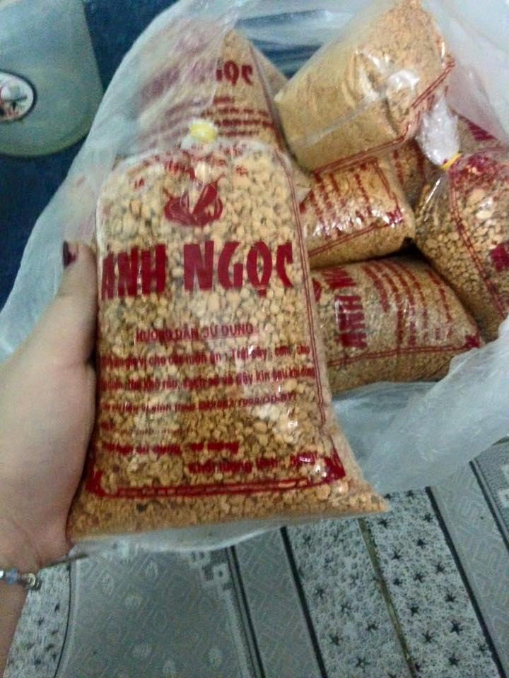

Muối tômMuối là loại muối hột, được sơ chế một cách sạch sẽ.Ớt và tôm sau khi sơ chế được xay nhuyễn thành bột thô rồi trộn đều với muối theo một tỉ lệ nhất định đồng thời, tùy vào nơi chế biến, cho thêm các loại gia vị khác như tỏi, sả...
Sau đó, cho tất cả lên chảo nóng và rang đều. Người thợ phải canh lửa, và rang đều tay để cho hạt muối ra màu màu gạch đỏ và giữ hương thơm đặc trưng của muối tôm.
muối chủ yếu được dùng với hoa quả,đặc biệt dùng với cóc bao tử rất hợp ạ.
Hãy gọi ngay cho chúng tôi theo hotline 0967105331 để có những chiếc bánh Donut thơm ngon

Muối tôm : 20.000đ / 1lạng
